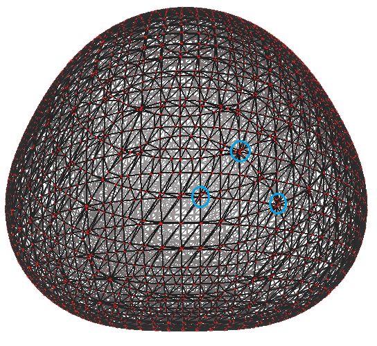
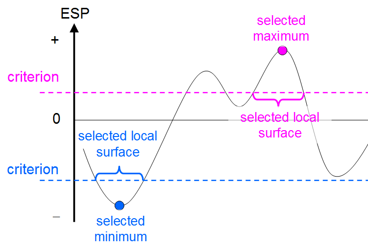
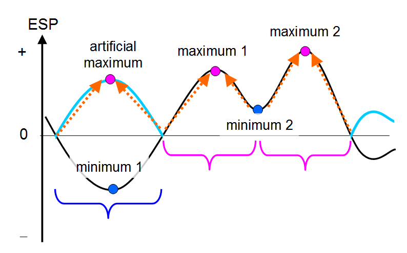
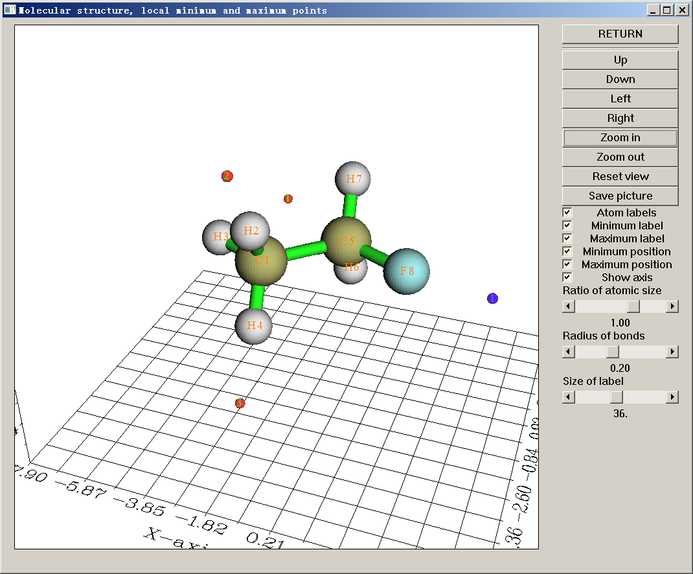
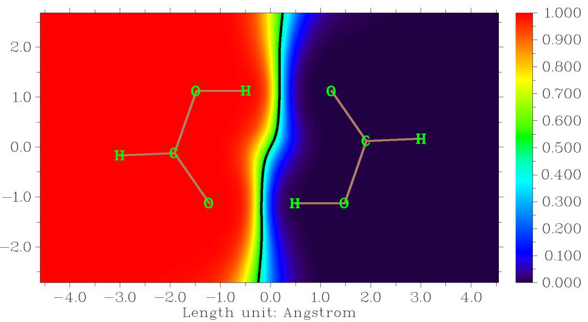
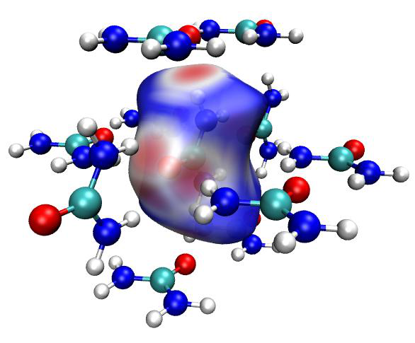

3.15 Quantitative analysis of molecular surface (12)¶
Multiwfn manual, p.192–209. Images:
../imgs/.
In Can. J. Chem., 75, 1174 (1997), the authors showed that electron density at RCP is closely related to aromaticity of corresponding ring. The larger the density, the stronger the aromaticity. They also pointed out that the curvature of electron density perpendicular to the ring plane at the RCP has more significant correlation with the ring aromaticity. The more negative the curvature, the stronger the aromaticity. Assume that the ring is strictly perpendicular to a Cartesian axis, for example, a ring perpendicular to Z axis (viz. the ring is in XY plane), then the curvature is just ZZ component of Hessian matrix of electron density at the RCP, which can be directly obtained by using option 7 to print out properties of a given RCP. However, if the ring is not exactly perpendicular to any Cartesian plane, you should use option 21 to calculate the curvature. In option 21, you should input the index of the RCP (or directly input coordinate of a point), then choose 2, then input indices of at three atoms comprising the plane (they are used to fit the ring plane). After that, the electron density, the gradient and the curvature of electron density perpendicular to the ring plane at the RCP will be outputted on screen. In addition, unit normal vector, the coordinates of the two points above and below 1 Å of the RCP in normal direction will be outputted together, which can be taken as the point used to calculate NICS(1).
Examples of various kinds of topology analysis can be found in Section 4.2. Information needed: GTFs, atom coordinates
3.15 Quantitative analysis of molecular surface (12)¶
Quantitative analysis of molecular surface is a powerful tool, it has a lot of practical applications, such as predicting reactive sites, predicting molecular properties, and interpreting intermolecular weak interactions. The theory and numerical algorithm involved in present module have been detailedly described in my paper J. Mol. Graph. Model., 38, 314 (2012). In the next two sections, these two aspects will only be briefly introduced.
3.15.1 Theory¶
In Multiwfn, in principle, distribution of any real space function on molecular surface (or the surface defined by isosurface of a certain function) can be quantitatively studied. Electrostatic potential and average local ionization energy on molecular vdW surface are particularly useful, therefore they will be discussed detailed in this section. Same kind of quantitative analyses could also be applied to other real space functions, such as user-defined functions, electron delocalization range function (EDR) and even Fukui function and dual descriptor.
(1) Electrostatic potential on vdW surface Molecular electrostatic potential (ESP), V(r), has been widely used for prediction of nucleophilic and electrophilic sites, as well as molecular recognition mode for a long time, the theoretical basis is that molecules always tend to approach each other in a complementary manner of ESP. These analyses of ESP are commonly performed on molecular van der Waals (vdW) surface. Although the definition of such a surface is arbitrary, most people are prone to take the 0.001 a.u.
isosurface of electron density as vdW surface, since this definition reflects specific electron structure features of a molecule, such as lone pairs and π electrons, this is also what the definition used in our analyses.
The analysis of ESP on vdW surface has been further quantified to extract more information. It is shown that the strength and orientation of weak interaction, including such as hydrogen bonding, dihydrogen bonding and halogen bonding, can be well predicted and explained by analyzing the magnitude and positions of minima and maxima on the surface. Politzer and coworkers (J. Mol. Struct. (THEOCHEM), 307, 55 (1994)) have defined a set of molecular descriptors based on ESP on vdW surface, which are taken as independent variables of general interaction properties function (GIPF). GIPF successfully connects distribution of ESP on vdW surface and many condensed phase properties, including density, boiling point, surface tension, heats of vaporization and sublimation, LogP, impact sensitivity, diffusion constant, viscosity, solubility, solvation energy and so on. Below I enumerate and brief these descriptors.
A+ and A− indicate the surface area in which the ESP has positive and negative value, respectively. Total surface area A is the sum of them.
+SV and −SV denote average of positive and negative ESP on vdW surface respectively
where N+ and N− are number of sampling points in positive and negative regions respectively, and the index i only loops corresponding points. The S subscript means "molecular surface". The average of ESP over the entire surface is
where N=N++N− is the total number of surface points.
Θ is the average deviation over the surface, which is viewed as an indicator of internal charge separation:
The total ESP variance can be written as the sum of positive and negative parts:
The variance reflects the variability of ESP. The larger the \(\sigma_{+}^{2}\), the more tendency that the molecule interacts with other molecules by positive and negative ESP regions respectively.
Degree of charge balance (also known as balance of charges) is defined as
When 𝜎+2 equals 𝜎−2, ν attains its maximum value of 0.250. The closer the ν to 0.250, the more possible that the molecule can interact to others through positive and negative region with similar
extent.
2 is an indicative of a molecule that has relatively strong tendencies to interact with others of its own kind electrostatically. The product of 𝜎tot 2 and ν is a very useful quantity too, a large value of ν𝜎tot
In order to quantify molecular polarity, I defined a quantity named molecular polarity index
(MPI), which is closely related to the Π index.
where S denotes molecular surface. My test for some representative molecules showed that MPI is a quite reliable index of measuring molecular polarity, the larger the index, the higher the polarity. If MPI is involved in your research, please cite my paper Carbon, 171, 514 (2021), which is the first publication introducing the MPI index.
Skewness can be used to measure the asymmetry of distribution of a real space function about its mean over molecular surface. Positive skewness is calculated as follows
Similarly, for calculating negative skewness, only surface points with negative ESP are taken into account. While for calculating overall skewness, all surface points are used. For each kind of skewness, the more positive (negative) the value, the stronger the tendency that ESP distributes toward negative (positive) direction with respect to the average value.
In Multiwfn, above-mentioned surface descriptors can be calculated not only on the whole vdW surface, but also on the subregions corresponding to atoms or user-defined fragments. The detail of the theory is to be published, and thus not documented here at the moment. In addition, these surface descriptors can be calculated for any other real space function.
(2) Some practical applications of GIPF descriptors ·Predicting heat of vaporization and heat of sublimation A practical application of above GIPF descriptors is presented in J. Phys. Chem. A, 110, 1005 (2006). The authors showed that for a series of molecules containing C, H, N and O elements, the heat of vaporization can be well evaluated as
with least-squares fit coefficients a = 2.130, b = 0.930 and c = -17.844. The heat of sublimation can be predicted as
with a = 0.000267, b = 1.650087 and c = 2.966078. In above equations the surface area A is in Å2,
2 is in (kcal/mol)2. Note that the coefficients are more or less dependent on the calculation level used. The author used B3LYP/6-31G* to optimize geometry and B3LYP/6-311++G(2df,2p) to calculate ESP. ΔHsub is in kcal/mol, 𝜎tot
In Int. J. Quantum Chem., 105, 341 (2005), Politzer et al. proposed other equations for
predicting ΔHvap and ΔHsub in standard state, their equations can be used for molecules containing C, H, O, N, F, Cl, S:
2 is in (kcal/mol)2. B3PW91/6-31G** was employed in their study. The mean absolute error of ΔHvap and ΔHsub were found to be 2.0 kcal/mol and 2.8 kcal/mol, respectively. The ΔHvap and ΔHsub are in kcal/mol, A is in Å2 and 𝜎tot
·Predicting density of molecular crystal Another typical application of statistical data of ESP on vdW surface is predicting crystal density of organic molecules containing C, H, N and O elements. The crystal density is a crucial property of energetic compounds. In J. Phys. Chem. A, 111, 10874 (2007), it was shown that the
density can be estimated by ρ \(\rho = M / V_{m}\), where M is molecular mass and Vm is molecular vdW volume defined by ρ = 0.001 a.u. isosurface; for ionic crystal (e.g. ammonium azide), M and Vm correspond the sum of mass and volume of the cation and anion comprising a formula unit of the compound. Although the relationship is quite simple, it indeed works well for most neutral species, but the error is evidently larger for ionic species. In order to improve the prediction accuracy for neutral ones, in Mol. Phys., 107, 2095 (2009), the authors introduced GIPF descriptors into the formula:
At B3PW91/6-31G** level, the fitted coefficients are α = 0.9183, β = 0.0028 and γ = 0.0443. This formula has proven to have improved accuracy, because intermolecular electrostatic interaction is somewhat effectively taken into consideration. In a succeeding paper Mol. Phys., 108, 1391 (2010),
the author showed that the crystal density of ionic compounds can be estimated much better than ρ \(\rho = M / V_{m}\) if GIPF descriptors are introduced:
with least-squares fit coefficients α = 1.0260, β = 0.0514, γ = 0.0419 and δ = 0.0227 at B3PW91/6-31G** level. In the equation, 𝑉̅S(cation) − and 𝐴(anion) − denote the 𝑉̅S − and 𝐴− of the anion. For 30 test cases, the average absolute error is + and 𝐴(cation) + denote the 𝑉̅S + and 𝐴+ of the cation; 𝑉̅S(anion)
merely 0.033 g/cm3.
Notice that above relationships are only appropriate for small organic compounds containing C, H, N, O elements, the error are significantly larger for other kinds of systems.
·Predicting boiling point In J. Phys. Chem., 97, 9369 (1993), it is shown that boiling point can be predicted as
where α = 2.736, β = 33.31, γ = -72.05 were fitted at HF/STO-5G//HF/STO-3G level. This paper also showed equations for predicting critical temperature, volume and pressure.
·Predicting solvation free energy
In J. Phys. Chem. A, 103, 1853 (1999), the prediction equation for solvation free energy is presented as (\((V_{\mathrm{min}}\) denotes the ESP value at its global minimum in the whole space):
−×−=Δ VVVG )(106412.217201.0(kJ/mol)3minS,maxS,5minsolv −
·Predicting pKb In J. Chem. Inf. Model., 60, 1445 (2020), the authors showed that pKb of amino groups can be nicely estimated by fitting equation, for example, primary amine cases:
bS,minp0.495224.5880KV=×+
where VS,min is in kcal/mol and should be calculated at ωB97XD/cc-pVDZ level. Prediction accuracy of this equation is fairly satisfactory, the R2 is as high as 0.9519 with mean absolute error of merely 0.12. Similar fitted equations are also available for secondary amines, tertiary amines and tertiary amines.
·Predicting other properties In addition, the equations used to predict heat of fusion, surface tension and crystal/liquid density can be found in J. Phys. Chem., 99, 12081 (1995), the equations used to predict lattice energy for ionic crystal containing NH4+, K+ and Na+ are given in J. Phys. Chem. A, 102, 1018 (1998). More formulae used to predict physical properties of organic molecules based on GIPF descriptors are summarized in Table 3 of J. Mol. Struct. (THEOCHEM), 425, 107 (1998). GIPF also has many important uses in study of biochemical systems, see Int. J. Quantum Chem., 85, 676 (2001) for a review.
(3) Other mapped functions: Average local ionization energy and so on Average local ionization energy, 𝐼̅, has attracted more and more attentions, see corresponding part of Section 2.6 for brief introduction. This function has many uses, for example, reproducing atomic shell structure, measuring electronegativity, quantifying local polarizability and hardness. However, the most important use may be the prediction of reactivity according to function value on vdW surface, 𝐼̅𝑆. Lower value of 𝐼̅𝑆 indicates that the electron at r is more weakly bounded, therefore more likely r is the site of electrophilic or radical attack. Many studies have shown that the global minimum of 𝐼̅ on vdW surface exactly locates the experimental reaction site, while relative magnitude of 𝐼̅ at corresponding reaction site in homologues correlates well with relative reactivity. The interested users are recommended to take a look at J. Mol. Model, 16, 1731 (2010) and Chapter 8 of the book Theoretical Aspects of Chemical Reactivity (2007).
Local electron affinity EAL is a quantity very similar to 𝐼̅, the only difference is that the MOs under consideration are not all occupied ones, but all unoccupied ones. It was shown that EAL on molecular surface is useful for analyzing nucleophilic attacking, for detail see J. Mol. Model., 9, 342 (2003).
Quantitative analysis on molecular surface for Fukui function and orbital overlap distance function D(r) have also been proven to be fairly useful, see Sections 4.12.4 and 4.12.8 for example, respectively.
About sphericity At the end of this section, it is worth to mention that Multiwfn automatically prints "sphericity" of the molecular surface during the calculation irrespective of the choice of mapped function. This
quantity is defined as follows (see https://en.wikipedia.org/wiki/Sphericity for detail)
where A and V are surface area and volume, respectively. Sphericity is essentially the ratio of the surface area of a sphere with the same volume as the present system to the surface area of the present system. The closer it to 1.0, the more the surface looks like an ideal sphere. Therefore, for example, you will find sphericity of vdW surface of benzene is notably smaller than Ar atom, and the
sphericity of ρ = 0.01 a.u. isosurface is always smaller than that of ρ = 0.001 a.u. isosurface for any molecule because the latter is smoother.
Notice that the sphericity calculated in the above way does not work for systems with cavity. For example, it cannot be used to reasonably determine sphericity of C60 fullerene, because there is a cavity (isosurface) at the center of the ball.
3.15.2 Numerical algorithm¶
3.15.2.1 Analysis on the whole molecular surface
In summary, in the common task of quantitative analysis of molecular surface, what we need to obtain are minima and maxima of a selected real space function (i.e. mapped function) on vdW
surface (or isosurface of a specific real space function), as well as quantitative indices such as +SV,
−SV, SV, Θ, 2+σ, 2−σ and so on. Here I briefly describe how these properties are computed in
Multiwfn, the basic steps are given below.
-
Grid data of electron density enclosing the entire molecular space is computed. The smaller the grid spacing is used, the more accurate result you will get, however the more vertices will be generated in next step and therefore you will wait longer time in step 3.
-
Marching Tetrahedra algorithm is performed by making use of the grid data generated above, this step generally does not cost much computational time. The volume enclosed by the isosurface is computed at the same time. This step generates vertices representing the isosurface, along with their connectivity. Each neighbouring three vertices constitute a triangle (will be referred to as facet below). The example below is a water molecule, vertices (red points) and connectivity (black lines) are portrayed:
-
Since computing ESP is time consuming, in order to cut down overall computational time, Multiwfn eliminates redundant points automatically. Specifically, if the distance between two points is smaller than a specific value, one of the points will be eliminated, and the other point will be moved to their average position. In the graph above, the aggregated points such as those inside blue circles will be finally merged to one point.
-
Calculate mapped function (ESP, \(\bar{I}\) and so on) at each vertex on the isosurface. For ESP, this is the most time-consuming step; however, for such as 𝐼̅ and EAL, this step can be finished immediately.
-
Locate and then output minima and maxima of the mapped function on the surface by making use of connectivity. If the mapped function value at a vertex is lower (larger) than that at its first-shell neighbours and second-shell neighbours, then this vertex will be regarded as surface minimum (maximum).
volume, area of total vdW surface, the area where the mapped function is positive and where is
negative. As an example, SV is computed as
where N is the total number of facets, A is the sum of area of all facets, Ai is the area of facet i, Fi is the ESP value (or value of other mapped function) of facet i, which is calculated as the average of ESP at the three vertices composing the facet.
3.15.2.2 Analysis on local molecular surface
In order to unveil more chemically useful information from distribution of mapped function on vdW surface, Multiwfn supports three kinds of analyses for local vdW surface, as described below.

(1) Analysis of local molecular surface corresponding to various atoms In this mode the whole molecular surface will be first decomposed to local surfaces corresponding to individual atoms, and then all surface properties are calculated for these atomic surfaces. This function is very helpful to study atomic properties. See Section 4.12.3 for example.
Note that atomic local regions on molecular surface cannot be uniquely defined. The rule employed by Multiwfn is shown as follows, which is simple and has clear physical meaning. For any given point r on the molecular surface, Multiwfn calculates weight w for all atoms via
where A denotes atomic index, rA and RA are coordinate and radius of atom A, respectively. The surface point r is attributed to the atom that has the maximal weight. It can be seen that at the position of nucleus A, wA reaches its maximal value 1.0. wA linearly attenuates with increase of the distance |r-rA|, it attains zero when the distance just equals corresponding atomic radius. The larger radius the atom has, the slower the weight attenuates, therefore the above definition of weight makes larger sized atoms have higher possibility to cover broader range on molecular surface.
In Multiwfn it is also possible to perform analysis of local molecular surface corresponding to a user-defined fragment, the region of the fragment is simply the sum of the regions of all the atoms that constitute it.
(2) Analysis of local molecular surface around specific surface extreme
This kind of analysis is mainly used for measuring area and graphically revealing region of σ-hole and π-hole, see Section 4.12.10 for practical example, but it can also be used for other analysis purposes if the mapped function is not chosen to be electrostatic potential.
In this mode, you need to select a surface extreme and set a criterion. When you select a surface maximum (minimum), if a surface vertex is directly or indirectly connected to the surface extreme and value of mapped function at this vertex is higher (lower) than the criterion, the vertex will be selected, all the selected vertices collectively define the local molecular surface. In order to make you intuitively understand how this mode defines the local surface around a selected surface extreme, a graphical illustration is provided below, in this map one-dimension ESP distribution is used to abstractly represent two-dimensions distribution of ESP on molecular surface.
(3) Analysis of local molecular surface based on Basin-like partition

Basin partition generally refers to partitioning the whole molecular space into individual local spaces by employing zero-flux surfaces of gradient of a real space function as basin boundaries, each basin contains a maximum, see Section 3.20.1 for detailed introduction. The same idea may also be employed for partitioning the molecular surface. When this technique is adopted in combination with ESP, some chemically useful information could be gained, see Section 4.12.11 for practical example.
The algorithm of applying basin partition to molecular surface is proposed by me (to be published). The main purpose is to determine the attribution relationship between surface vertices and surface extrema. Because the mapped function may have both positive and negative values, absolute value of the mapped function is firstly taken, then all surface vertices are considered in turn. Iteration is performed for each surface vertex; in each step, the vertex temporarily moves towards the neighbouring vertex having largest value, namely climbing up hill. The iteration continues until the vertex reaches a surface extreme, which is just the extreme that the surface vertex finally attributed to. Note that after usual quantitative molecular surface analysis, the connection relationship between various surface vertices is already known, if vertex B is directly connected to A, then B will be the neighbouring vertex of A. To make you better understand central idea of this method, a figure is shown below
In this graph, the black curve represents the original ESP distribution, the cyan and black curves collectively correspond to the absolute value of the ESP. The region enclosed by blue bracket corresponds to the local surface corresponding to minimum 1, while the two pink brackets respectively correspond to the two local surfaces corresponding to maxima 1 and 2.
For the above-mentioned modes (2) and (3), if all the three vertices of a surface facet are selected, this surface facet will be regarded as attributed to the selected local surface. Then the area as well as average of mapped function of the selected local surface can be straightforwardly evaluated.
3.15.3 Parameters and options¶
You will see below options in the main interface of quantitative analysis of molecular surface. 0 Start analysis now!: When this option is selected, the analysis boots up. All steps described in last section will be implemented sequentially.

6 Start analysis without considering mapped function: This option also starts analysis like option 0, however calculation and analysis of mapped function are skipped. This option is useful if you are only interested in e.g. volume and area of molecular surface while value of mapped function is not of interest.
1 The isovalue of electron density used to define molecular surface: Default value is 0.001, corresponding to the most frequently used definition of vdW surface. In general, it is not recommended to adjust this value.
2 Select mapped function: The mapped function to be studied can be selected by this option. Such as ESP, 𝐼̅ , EAL and user-defined function (Section 2.7) are directly supported and can be automatically computed by internal code of Multiwfn during the surface analysis. Alternatively, if you intend to load value of mapped functions at all surface vertices from an external file, you should choose "0 Function from external file", in this case you may analyze broader type of mapped functions (e.g. Fukui function), see description of option 5 given below for more detail.
Note that by default the ESP is evaluated based on wavefunction, this process may be quite time-consuming for large systems. However, if you choose "Electrostatic potential from atomic charge", then Multiwfn will evaluate ESP based on atomic charges, which are loaded from a .chg file, the computational time will be reduced by several orders. You can use main function 7 to calculate atomic charge and produce the .chg file, or you can write the .chg file manually, see corresponding part of Section 2.5 on the .chg file format. Note that the analysis result will be reasonable only when the method used to generate atomic charges can reproduce ESP well (e.g. CHELPG, MK and ADCH methods). Also note that in some cases ESP generated by atomic charges differ significantly from the ESP generated based on wavefunction, see J. Chem. Theory Comput., 10, 4488 (2014) for comprehensive discussion.
3 Spacing of grid points for generating molecular surface: This setting defines the spacing of electron density grid data, see step 1 introduced in the last section. The spacing directly determines the accuracy and computational cost of the analysis. Default value is suitable for general cases. Increasing this value can reduce computational time evidently, however if this value is not small enough, the vertices on the isosurface will be spare, this may cause missing or erroneous locating of some extrema. In general, the results under the default spacing are accurate and reliable. If you find some extrema were not located under default spacing, try to decrease spacing and rerun the task.
4 Advanced options: Suboptions in this option do not need to be frequently adjusted by normal users.
(1) The ratio of vdW radius used to extend spatial region of grid data: The role of this parameter is exactly identical to the parameter k introduced in Section 3.100.3. Enlarging this value will lead to a larger spatial extension of grid data of electron density around the molecule. If isovalue of electron density is set to a lower value than default, or the system is negatively charged, you may need to enlarge this parameter to ensure that the isosurface will not be truncated.
(2) Toggle if eliminating redundant vertices: If this option is switched to "No", then the elimination of redundant vertices (step 3 described in last section) will be skipped, and you will waste vast time to calculate mapped function at those meaningless vertices. If this option is switched to "Yes", you will be prompted to input a distance criterion for merging adjacent vertices. Commonly, 0.4~0.5 times of grid spacing is recommended to be used as the criterion.
(3) Number of bisections before linear interpolation: Simply speaking, the larger the value, the more exactly the isosurface (corresponding to vdW surface) can be generated. Enlarging this
value will bring additional cost in step 2. The generated isosurface under default value is exact enough in general. You can decrease it to 2 even to 1 to save computational time, however, decreasing it to 0 will frequently lead to false surface extrema.
(4) Toggle using focal-point approximation to evaluate ESP I proposed a way to approximately estimate \(\rho_{\mathrm{large~BS}}^{\mathrm{high}} \approx \rho_{\mathrm{small~BS}}^{\mathrm{high}} + (\rho_{\mathrm{large~BS}}^{\mathrm{low}} - \rho_{\mathrm{small~BS}}^{\mathrm{low}})\)-quality ESP with relatively lower computational cost, this idea will be referred to as focal-point approximation (FPA). Specifically, given the fact that electron density estimated by high-level method with large basis set can be
approximately expressed as 𝜌large BS \(\rho_{\mathrm{large~BS}}^{\mathrm{high}} \approx \rho_{\mathrm{small~BS}}^{\mathrm{high}} + (\rho_{\mathrm{large~BS}}^{\mathrm{low}} - \rho_{\mathrm{small~BS}}^{\mathrm{low}})\)≈𝜌small BS high+ (𝜌large BS low−𝜌small BS low) , since ESP is linear to
electron density, \(\rho_{\mathrm{large~BS}}^{\mathrm{high}} \approx \rho_{\mathrm{small~BS}}^{\mathrm{high}} + (\rho_{\mathrm{large~BS}}^{\mathrm{low}} - \rho_{\mathrm{small~BS}}^{\mathrm{low}})\)-quality ESP (V) can thus be approximately estimated as 𝑉large BS high≈
𝑉small BS \(\rho_{\mathrm{large~BS}}^{\mathrm{high}} \approx \rho_{\mathrm{small~BS}}^{\mathrm{high}} + (\rho_{\mathrm{large~BS}}^{\mathrm{low}} - \rho_{\mathrm{small~BS}}^{\mathrm{low}})\)+ (𝑉large BS low−𝑉small BS low) , the cost is evidently much lower than calculating ESP directly
using the \(\rho_{\mathrm{large~BS}}^{\mathrm{high}} \approx \rho_{\mathrm{small~BS}}^{\mathrm{high}} + (\rho_{\mathrm{large~BS}}^{\mathrm{low}} - \rho_{\mathrm{small~BS}}^{\mathrm{low}})\)-level method with large basis set.
If you want to use the FPA during ESP analysis, you should load the wavefunction file produced by “\(\rho_{\mathrm{large~BS}}^{\mathrm{high}} \approx \rho_{\mathrm{small~BS}}^{\mathrm{high}} + (\rho_{\mathrm{large~BS}}^{\mathrm{low}} - \rho_{\mathrm{small~BS}}^{\mathrm{low}})\) method / small basis-set” calculation after booting up Multiwfn, then enter the present function and choose this option once to switch its status to “Yes”, then Multiwfn will ask you to input paths of wavefunction files produced by “low method / small basis-set” and “low method / large basis-set” calculations (obviously, their geometries must be exactly identical to the “high method / small basis-set” wavefunction). Then in the stage of calculation of ESP, they will be automatically adopted to evaluate high-quality ESP via the FPA equation shown above.
5 Loading mapped function values from external file By choosing proper suboption in this option, during surface analysis, the value of mapped function at surface vertices can be loaded from external file rather than directly calculated by Multiwfn. This option has two uses: (1) Reduce overall analysis cost (2) Analyze a special function that cannot be calculated by Multiwfn, or the analyze a function requiring mathematical operations and thus not directly available in present module (e.g. dual descriptor).
This option has four suboptions: (0) Do not load mapped function but directly calculate by Multiwfn: This is default case. (1) Load mapped function at all surface vertices from plain text file: If this option is selected, then after generation of molecular surface, coordinate of all surface vertices (in Bohr) will be automatically exported to surfptpos.txt in current folder. Then you can use your favourite program to calculate mapped function value at these points, and write the values as the fourth column in this file (in free format, unit is in a.u.). For example,
1324 // The first line is the total number of points
-1.6652369 -0.5480503 -0.2554867 -0.0196978306
-1.6835983 -0.5563165 -0.1342924 -0.0242275610
-1.6977125 -0.5530614 -0.0099311 -0.0287667191
-1.7013207 -0.5536310 0.1194197 -0.0330361826
-1.6954099 -0.5523031 0.2547866 -0.0371580132
....
Then input the path of this file (the name can still be surfptpos.txt), Multiwfn will directly read the values. An exemplificative application of this option is given in Section 4.12.4.
Hint: If you will analyze a system twice or more times, and want to avoid calculating mapped function values every time for saving time, at the first time you analyze the system, you can select option 7 at post-processing interface to export coordinates and corresponding mapped function values of surface vertices to vtx.txt in current folder. At next time you analyze the system, if you choose this option, and input the path of the vtx.txt during the surface analysis, then mapped function values will be directly loaded rather than re-calculated (See Section 4.12.1 for example).
(2) Similar to 1, but specific for the case of using cubegen utility of Gaussian: A file named cubegenpt.txt will be generated in current folder after generation of molecular surface. This file is very similar to surfptpos.txt, the difference is that in this file the first line is not presented, and coordinate unit is in Å. Based on this file, you can make use of cubegen utility of Gaussian to calculate mapped function at all surface vertices. After that, input the path of cubegen output file, the data will be loaded by Multiwfn.
(3) Interpolate mapped function from an external cube file: After generation of molecular surface, a template cube file named template.cub will be generated in current folder. Then you will be prompted to input the path of a cube file representing the mapped function you are interested in, the grid setting of this cube file must be exactly identical to template.cub. The mapped function values at surface vertices will be evaluated by interpolation from the cube file you provided.
3.15.4 Options in post-processing menu¶
Once all calculations of surface analysis are finished, a summary will be printed on screen. Meanwhile the options below will appear on screen used to check, adjust and export results.
-3 Visualize the surface: By this option you can directly visualize the isosurface analyzed. -2 Export the grid data to surf.cub in current folder: The grid data used to generate isosurface will be exported to the cube file surf.cub in current folder.
-1 Return to upper-level menu 0 View molecular structure, surface minima and maxima: A GUI window will pop up if this option is chosen. Red and blue spheres represent the position of maxima and minima. All widgets are self-explanatory and hence not be explained here.
1 Export surface extrema as surfanalysis.txt in current folder: This option exports value of mapped function and X, Y, Z coordinates of surface extrema to surfanalysis.txt in current folder.
2 Export surface extrema as surfanalysis.pdb in current folder: This option outputs surface extrema to surfanalysis.pdb in current folder. The B-factor column records mapped function value (the actually used unit is shown on screen).
3 Discard surface minima in certain value range: If the mapped function value at a surface minimum is between the lower and upper limit inputted by user, then this minimum will be discarded and cannot be recovered. This option is useful to screen the minima with too large value.
4 Discard surface maxima in certain value range: If the mapped function value at a surface maximum is between the lower and upper limit inputted by user, then this maximum will be discarded and cannot be recovered. This option is useful to screen the maxima with too small value.
5 Export present molecule as pdb format file: This option outputs structure of present system to a specified pdb file. Since pdb is a widely supported format, in conjunction with the output by option 2, surface extrema can be conveniently analyzed in external visualization softwares such as VMD.
6 Export all surface vertices to vtx.pdb in current folder: This option outputs surface vertices to vtx.pdb file in current folder, mapped function values are written to B-factor field (the actually used unit is shown on screen). This option is mainly used to check validity of isosurface polygonization and visualize distribution of mapped function on molecular surface.
There is a hidden option 66, which not only outputs surface vertices to vtx.pdb, but also outputs connectivity into CONECT field of this file. If you would like to visualize connectivity based on the vtx.pdb in VMD program, please consult my blog article "Setting connectivity of atoms according to CONECT field in VMD" (http://sobereva.com/121, in Chinese)
7 Export all surface vertices to vtx.txt in current folder: Namely outputting all reserved surface vertices to a plain text file named vtx.txt in current folder, including vertex X/Y/Z

coordinates in Bohr and mapped function values in various units.
8 Export all surface vertices and surface extrema as vtx.pqr and extrema.pqr: This option exports all surface vertices and surface extrema as vtx.pqr and extrema.pqr in current folder, respectively. The column originally designed for recording atomic charge in this format (i.e. the third last column) is used to record mapped function value in a.u. Because recording precision in this case is relatively high, if the value of mapped function is too small to be properly recorded as B-factor field of .pdb file (e.g. Fukui function on vdW surface), obviously you should use this option to replace options 2 and 6.
9 Output surface area in specific value range of mapped function By using this option, one can gain knowledge of the distribution of molecular surface area in different ranges of the mapped function. First one needs to input the index range of the atoms under consideration, then input overall range, interval and the unit. For example, one sequentially inputs 2,6-9, then -45,50, then 10, and finally 3, the statistic then is applied on the local molecular surface corresponding to atoms 2, 6, 7, 8 and 9, the output looks like below:
Begin End Center Area %
-50.0000 -40.0000 -45.0000 4.8764 1.5171
-40.0000 -30.0000 -35.0000 28.0413 8.7242
-30.0000 -20.0000 -25.0000 23.2699 7.2397
-20.0000 -10.0000 -15.0000 17.6022 5.4764
-10.0000 0.0000 -5.0000 61.4759 19.1263
0.0000 10.0000 5.0000 72.6197 22.5933
10.0000 20.0000 15.0000 55.2707 17.1957
20.0000 30.0000 25.0000 53.9060 16.7712
30.0000 40.0000 35.0000 2.8590 0.8895
40.0000 50.0000 45.0000 1.5000 0.4667
Sum: 321.4212 100.0000
where "begin" and "end" are the lower and upper limit of local value range, respectively. "Center" is their average value. Area is in Å2, "%" denotes the proportion of the area in overall molecular surface area.
10 Output the closest and farthest distance between the surface and a point In this option, after defining a point (you can define a nuclear position or geometry center as the point, you can also directly input the coordinate of the point), the closest and farthest distance between the molecular surface and the point will be outputted. These two quantities have two main uses:
(1) In atoms in molecules (AIM) theory, for systems in gas phase, the vdW isosurface is defined as the ρ=0.001 a.u. isosurface. The closest distance between a nucleus and the surface can be regarded as non-bonded atomic radius. For a non-covalently interacting atomic pair AB, the difference between the length of A-B and the sum of their non-bonded radii is termed as mutual penetration distance. In general, the larger the distance is, the stronger the interaction will be.
(2) The farthest distance between molecular surface and geometry center can be viewed as a definition of molecular radius. Of course, the concept of molecular radius is only meaningful for sphere-like molecules.
If you input f, Multiwfn will output the farthest distance between all surface points. This can be regarded as a definition of molecular diameter.
11 Output surface properties of each atom This option is used to realize the analysis on the local molecular surfaces corresponding to different atoms, as introduced in Section 3.15.2.2. After outputting the surface properties, the user can select if outputting the surface facets to locsurf.pqr in current folder. If choosing "y", then in the outputted pqr file, each atom corresponds to a surface facet, residue index corresponds to the attribution of the surface facets, e.g. a facet having residue index of 11 means the facet belongs to the local surface of atom 11. In addition, the atomic charge field (the third last column) corresponds to mapped function value in a.u. If you load the pqr file into VMD and set "Coloring Method" as "ResID", then you can visually recognize how the whole molecular surface is decomposed to atomic surfaces.
12 Output surface properties of specific fragment Similar to function 11, but the user can define a fragment, the surface properties will only be calculated on the local surface corresponding to this fragment, so that one can study fragment properties according to the local surface descriptors. Also, you can choose to output the surface facets to locsurf.pqr in current folder, in which the atoms with residue index of 1 and 0 correspond to that the facet belongs to and does not belong to the local surface of the fragment you defined, respectively.
13 Calculate grid data of mapped function and export it to mapfunc.cub For example, if the mapped function you selected before the quantitative surface analysis is ALIE, then if you select this option in post-processing menu, grid data of ALIE will be calculated and exported to mapfunc.cub in current folder, the grid setting is the same as the one employed in the quantitative surface analysis. Based on the surf.cub exported by option -2 and the mapfunc.cub, you can plot color-mapped isosurface map via VMD program. Section 4.12.6 illustrates value of this option.
14 Calculate area and function average in a region around a surface extreme This option is used to realize the analysis "(2) Analysis of local molecular surface around specific surface extreme" described in Section 3.15.2.2. The area as well as averaged mapped function value of the local surface region will be printed on screen, and meantime a file selsurf.pqr will be exported to current folder, you can load it into VMD program to visualize the selected local surface region (drawing as "Points" method and coloring according to "Charge" property are recommended, the charge column in this file correspond to the mapped function values in a.u.).
15 Basin-like partition of surface and calculate areas This option is used to realize the analysis "(3) Analysis of local molecular surface based on Basin-like partition" described in Section 3.15.2.2. The number of surface vertices of each surface basin, the area of each surface basin, as well as average value of mapped function on each surface basin are outputted. At the meantime, surfbasin.pdb is exported to current folder and it contains all surface vertices, B-factor corresponds to index of the extreme that the vertex attributed to.
19 Discard some surface extrema by inputting indices Sometimes due to numerical noise or other reasons, there are some unwanted surface extrema. In this case you can use this option to conveniently remove them by inputting their indices.
Abundant examples of various kinds of quantitative molecular surface analyses can be found in Section 4.12.
3.15.5 Special topic: Hirshfeld and Becke surface analyses¶
The quantitative molecular surface analysis module is also able to carry out Hirshfeld and Becke surface analysis, present section is devoted to introducing this point.
Theory of Hirshfeld and Becke surface analyses Hirshfeld surface analysis was first proposed in Chem. Phys. Lett., 267, 215 (1997) and comprehensively reviewed in CrystEngComm, 11, 19 (2009). This method focuses on analyzing the so-called Hirshfeld surface to reveal weak interactions between molecules in complex or in molecular crystal.
Hirshfeld surface in fact is a kind of interfragment (or intermonomer) surface, which is defined based on the concept of Hirshfeld weight. Probably Hirshfeld surface is the most reasonable way to define interfragment surface.
Atomic Hirshfeld weighting function of an atom is expressed as
B
where 𝜌𝐴 0 denotes the density of atom A in free-state. Summing up weight of all atoms in a fragment yields Hirshfeld weight of this fragment HirshHirsh( )( )PAA Pww ∈= rr
Hirsh = 0.5. Motivated by Hirshfeld surface, I proposed Becke surface, which replaces Hirshfeld weight with Becke weight (see Section 3.18.0 for introduction of Becke weight), only geometry and atomic covalent radii are required to construct Becke surface. Commonly the profile of Becke surface and that of Hirshfeld surface are comparable. Hirshfeld surface is faster for large system and thus preferred over than Becke surface in most cases, however Becke surface has an advantage that it can be constructed normally in the region where electron density is vanished (very far from atoms), in which region Hirshfeld weight is undefined and thus Hirshfeld surface cannot be constructed. Hirshfeld surface of fragment P is just the isosurface of 𝑤𝑃
To intuitively illustrate Hirshfeld/Becke surface, acetic acid dimer in two-dimension case is taken as example here

Hirshfeld weighting function of the monomer at left side of the graph is represented by color bar, going from red to dark purple corresponds to the weight varying from 1.0 to 0.0. The black line, which is the contour line of 0.5, is just its Hirshfeld surface. Evidently, Hirshfeld surface very elegantly partitioned the whole space into two monomer regions, the difference in atomic size is properly and automatically taken into account. The Hirshfeld surface in this case is an open surface, the surface extends to infinity; while if the monomer is completely buried, such as in molecular crystal or metal-organic framework environment, then its Hirshfeld surface will be a close surface and enclose all of its nuclei, just like common molecular surface.
If we map specific real space functions on Hirshfeld/Becke surface and study their distributions, just like quantitative analysis on molecular surface, we can gain many important information about intermolecular interaction. There are three real space functions that are very useful for this purpose
(1) Normalized contact distance vdWe rdd−+−= , where di (de) is the vdWiinormr rdr vdWeevdWi
vdWand 𝑟𝑒vdW denote vdW radius of the corresponding two atoms. Small value of \(d_{norm} = \frac{d_{i} - r_{i}^{vdW}}{r_{i}^{vdW}} + \frac{d_{e} - r_{e}^{vdW}}{r_{e}^{vdW}}\) indicates close intermolecular contact and implies evident interaction. distance from a point on the surface to the nearest nucleus inside (outside) the surface, 𝑟𝑖
(2) Electron density. If electron density is large in some local regions of Hirshfeld/Becke surface, obviously the intermolecular interactions crossing these regions must be prominent. The usefulness of electron density is similar to \(d_{norm} = \frac{d_{i} - r_{i}^{vdW}}{r_{i}^{vdW}} + \frac{d_{e} - r_{e}^{vdW}}{r_{e}^{vdW}}\), while the former is more physically meaningful and leads to smoother color variation on the surface.
(3) sign(λ2)ρ, see corresponding part Section 2.6 for detailed explanation. This function can not only exhibit interaction strength but also reveal interaction type.
Below is urea crystal, the isosurface represents Hirshfeld surface of the central urea, and \(d_{norm} = \frac{d_{i} - r_{i}^{vdW}}{r_{i}^{vdW}} + \frac{d_{e} - r_{e}^{vdW}}{r_{e}^{vdW}}\) is the mapped function. Red parts correspond to small dnorm and thus exhibit close contact, which mainly originates from H-bond interaction.
Fingerprint plot and local contact The so-called "fingerprint plot" defined in the framework of Hirshfeld/Becke surface analysis is useful in investigating the noncovalent interactions in molecular crystals. X and Y axes in this

plot correspond to di and de, respectively. Each vertex on the Hirshfeld/Becke surface is drawn as a scatter point on the fingerprint plot. According to the distribution of the scatter points, possible intermolecular interactions can be inferred. The usefulness of the fingerprint plot is demonstrated in page 24 and 25 of CrystEngComm, 11, 19 (2009).
The Hirshfeld/Becke surface in fact can be viewed as the contact surface between the atoms in the Hirshfeld/Becke fragment you defined and all other atoms. The remarkable flexibility of Multiwfn allows the overall contact surface to be decomposed to various local contact surfaces and draw the corresponding local fingerprint plots. For example, one can draw fingerprint plot for the local contact surface between the nitrogen atoms in central urea and the hydrogens in surrounding ureas. In this case, all vertices on the local contact surface simultaneously satisfy two conditions: (1) In the Hirshfeld/Becke fragment (viz. the central urea), the atoms closest to the vertices are nitrogen (2) Among all surrounding atoms, the ones closest to the vertices are hydrogen. Undoubtedly, fingerprint plot of local contact surface greatly facilitates one to study the noncovalent interaction in local region due to the contact between specific atom sets.
Usage The procedure to perform Hirshfeld/Becke surface analysis is similar to usual quantitative molecular surface analysis. After you enter main function 12, choose option 1 and select Hirshfeld or Becke surface, then input the index of the atoms in the fragment. Now mapped function is automatically switched to electron density (if no wavefunction information is available, it corresponds to promolecular density). You can also choose option 2 to select another mapped function. After that, choose option 0 to start calculation. Quantitative data on the surface such as average value and standard deviation will be outputted, and surface extrema will be located. Then via corresponding options you can visualize surface minima/maxima, export result and so on, all options in the post-processing menu (except for option 20) have already been introduced in Section 3.15.4 and thus will not be described again.
In the post-processing menu, you can see an option named "20 Fingerprint plot and local contact analyses", after entering it you will see a menu, in which if you select option 0, the fingerprint analysis will be started. By default, the analysis is performed over the entire Hirshfeld/Becke surface. If you intend to perform fingerprint plot analysis for local contact region, you should use options 1 and 2 in this menu to respectively define "inside atoms" and "outside atoms", only the contact surface between these two sets of atoms will be taken into account in the analysis. Any atom in the "inside atoms" should be an atom in the current fragment, while any atom in the "outside atoms" should not belong to the current fragment. In options 1 and 2 you will be asked to input two filter conditions, their intersection defines the set. Condition 1 is atom index range, condition 2 is element. For example, if you input 1,3-6 as condition 1 and Cl as condition 2, then the Cl atom(s) within the range of 1,3-6 will be chosen.
After carrying out the fingerprint plot analysis, the area of the contact surface will be shown on screen. Then, in the new post-processing menu you can find many options, which can be used to draw fingerprint plot or modify plotting settings. By option 4 you can export the vertices on the local contact surface and entire Hirshfeld/Becke surface to finger.pqr and finger_all.pqr in current folder, respectively, in which “Charge” property (penultimate column of the files) corresponds to the value of mapped function. In addition, by option 5, you can export di and de values of the points on the local contact surface and entire Hirshfeld/Becke surface to di_de.txt and di_de_all.txt in current folder, respectively.